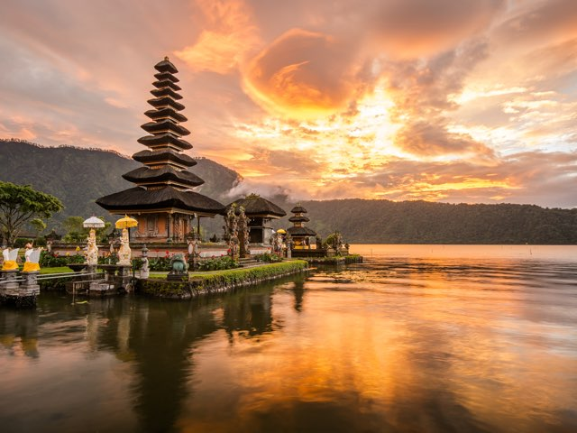
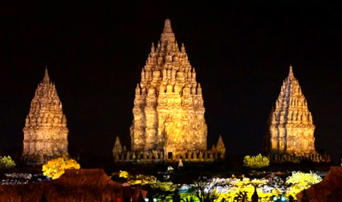

Bali Island
Bali Island, the perfect holiday destination for all ages offers something for everyone. Bali offers not just various customs but also various "adrenalin pump" parks. Many exciting amusements are available in Bali, with something new opening all the time. The number of offshore and inland attraction are on the rise because many tourists want them. This tropical paradise has a unique blend of modern tourist facilities combined with wonderful shopping and a rich past and heritage. After white water rafting that has gained popularity in Bali, comes offshore rafting or ocean rafting. The more adventurous sort of amusement has now become an alternative sport for tourists. Meanwhile white water rafting is still a popular activity with trips on Ayung, Telaga Waja, Unda Rivers, etc. The tourists can refresh their mind by watching beautiful scenery along the route. Those are not enough, some of the best surfing beaches in the world can be found on the western side of the island whilst conversely the eastern side is a wonderful haven for families, with beautiful white sand beaches and gentle seas.
Raja Ampat

Raja Ampat, is a regency and groups of islands that located in the tip of Bird's Head Peninsula on the island of New Guinea, precisely in West Papua province. Raja Ampat has 610 islands, which is only 35 islands that have been inhabited, the rest areun inhabited and even nameless. The famous islands in Raja Ampat are Misool island, Salawati, Batanta, and Waigeo island. The area of Raja Ampat is often touted as the best reef areas in the world. The marine biota has beauty that can easily captivated by the tourists. The origin name of Raja Ampat,according to local myth, is coming from a woman who found seven eggs. Four grains of which hatch into four princes who separated and each became the king who ruled in Waigeo, Salawati, East Misool and West Misool. Meanwhile, three other eggs became a ghost, a woman, and a stone. The area's massive coral colonies along with relatively high sea surface temperatures, also suggest that its reefs may be relatively resistant to threats like coral bleaching and coral disease, which now jeopardize the survival of other coral ecosystems around the world. The Raja Ampat islands are remote and relatively undisturbed by humans.
Prambanan Temple
This is the most famous and also the most magnificent of Central Java's temples or more precisely complex of temples. Situated about 15 kilometers from Yogyakarta, the top of the main shrine is visible from a great distance and rises high above the scattered ruins of the former temples. Prambanan is the masterpiece of Hindu culture of the tenth century. The slim building soaring up to 47 meters makes its beautiful architecture incomparable. Seventeen kilometers east of Yogyakarta, King Balitung Maha Sambu built the Prambanan temple in the middle of the ninth century. Its parapets are adorned with bas-reliefs depicting the famous Ramayana story. This magnificent Shivaite temple derives it name from the village where it is located. Prambanan Temple is locally known as the Roro Jonggrang Temple, or the Temple of the "Slender Virgin", it is the biggest and most beautiful Hindu temple in Indonesia. The temple complex of Prambanan lies among green fields and villages. It has eight shrines, of which the three main ones are dedicated to Shiva, Vishnu and Brahma. The main temple of Shiva rises to a height of 130 feet and houses the magnificent statue of Shiva's consort, Durga. There are 224 temples in the complex; three of them, the main temples are Brahma Temple in the north, Vishnu Temple in the south, and the biggest among the three which lies between Brahma and Vishnu temples is Shiva Temple (47 meters high).